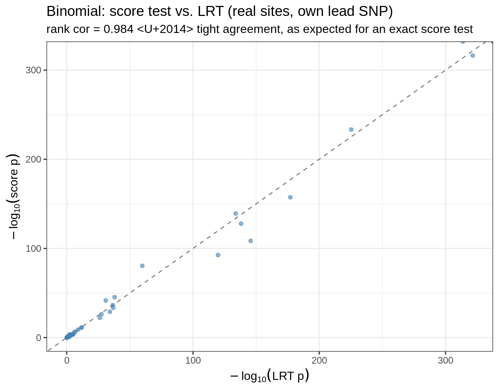
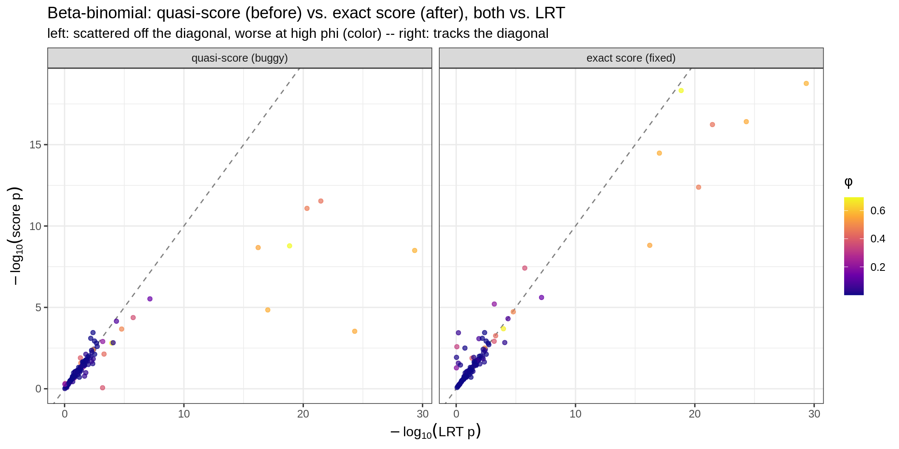

Last updated: 2026-08-25
Checks: 6 1
Knit directory: pumseq/
This reproducible R Markdown analysis was created with workflowr (version 1.7.0). The Checks tab describes the reproducibility checks that were applied when the results were created. The Past versions tab lists the development history.
The R Markdown file has unstaged changes. To know which version of
the R Markdown file created these results, you’ll want to first commit
it to the Git repo. If you’re still working on the analysis, you can
ignore this warning. When you’re finished, you can run
wflow_publish to commit the R Markdown file and build the
HTML.
Great job! The global environment was empty. Objects defined in the global environment can affect the analysis in your R Markdown file in unknown ways. For reproduciblity it’s best to always run the code in an empty environment.
The command set.seed(20260202) was run prior to running
the code in the R Markdown file. Setting a seed ensures that any results
that rely on randomness, e.g. subsampling or permutations, are
reproducible.
Great job! Recording the operating system, R version, and package versions is critical for reproducibility.
Nice! There were no cached chunks for this analysis, so you can be confident that you successfully produced the results during this run.
Great job! Using relative paths to the files within your workflowr project makes it easier to run your code on other machines.
Great! You are using Git for version control. Tracking code development and connecting the code version to the results is critical for reproducibility.
The results in this page were generated with repository version 1cb1d5d. See the Past versions tab to see a history of the changes made to the R Markdown and HTML files.
Note that you need to be careful to ensure that all relevant files for
the analysis have been committed to Git prior to generating the results
(you can use wflow_publish or
wflow_git_commit). workflowr only checks the R Markdown
file, but you know if there are other scripts or data files that it
depends on. Below is the status of the Git repository when the results
were generated:
Ignored files:
Ignored: analysis/qtl_mapping_summary_cache/
Unstaged changes:
Modified: analysis/qtl_mapping_betabinomial_diagnostic.Rmd
Modified: analysis/qtl_mapping_betabinomial_gof_failed.Rmd
Modified: analysis/qtl_mapping_score_vs_lrt.Rmd
Note that any generated files, e.g. HTML, png, CSS, etc., are not included in this status report because it is ok for generated content to have uncommitted changes.
These are the previous versions of the repository in which changes were
made to the R Markdown
(analysis/qtl_mapping_score_vs_lrt.Rmd) and HTML
(docs/qtl_mapping_score_vs_lrt.html) files. If you’ve
configured a remote Git repository (see ?wflow_git_remote),
click on the hyperlinks in the table below to view the files as they
were in that past version.
| File | Version | Author | Date | Message |
|---|---|---|---|---|
| html | 6e21490 | XSun | 2026-07-24 | update |
| Rmd | 25703a5 | XSun | 2026-07-23 | update |
| html | 25703a5 | XSun | 2026-07-23 | update |
library(data.table)
library(ggplot2)
knitr::opts_chunk$set(echo = TRUE, warning = FALSE, message = FALSE,
fig.align = "center", fig.width = 7, fig.height = 5.5)“I am not familiar with the statistical test used here [the score test]. You can probably still use LRT, but then you’ll need to include a ‘nuisance’ parameter — the extent of overdispersion.”
Both the binomial and beta-binomial pU-QTL models test \(H_0:\beta_g=0\) using a Rao score test rather than a likelihood-ratio test (LRT), for computational reasons explained below. This page:
Both test the same null hypothesis; they differ in what they require:
| LRT | Score test | |
|---|---|---|
| fit the full model (with \(\beta_g\)) | yes | no |
| fit the null model (without \(\beta_g\)) | yes | yes |
| nuisance parameters (covariates; \(\phi\) for BB) | re-estimated in both fits | estimated once, under the null |
| statistic | \(2(\ell_{\text{full}}-\ell_{\text{null}})\) | \(U^2/V\) (score \(U\), information \(V\), from the null fit) |
| asymptotic null | \(\chi^2_1\) | \(\chi^2_1\) |
They are asymptotically equivalent — same hypothesis, same reference distribution. In both, \(\phi\) (for the beta-binomial) or the covariates (for either model) are nuisance parameters; the score test just estimates them once rather than refitting them for every alternative.
The within-site cis-SNP correction (FastQTL/tensorQTL permutation beta-approximation) needs the nominal test statistic for every cis-SNP, recomputed for ~1000 phenotype permutations, at every one of 12,416 sites. An LRT needs a full-model refit per (site, SNP, permutation):
\[ 12{,}416 \text{ sites} \times \sim\!40 \text{ cis-SNPs} \times 1000 \text{ perms} \times 2 \text{ fits} \times 25\text{ms} \;\approx\; 69{,}000 \text{ CPU-hours} \]
A score test needs only one null fit per (site, permutation); every cis-SNP is then a fast vectorized matrix computation — no per-SNP refit. That is the entire reason for using it (the same reason large-scale genetic association methods like SAIGE/regenie use score tests genome-wide).
BASE <- "/project/xinhe/xsun/pumseq/pumseq_processed/psi_qtl"
source("/project/xinhe/xsun/pumseq/3.qtl_mapping_binomial/qtl_lib.R")
source("/project/xinhe/xsun/pumseq/4.qtl_mapping_betabinomial/betabin_lib.R")
C <- fread(file.path(BASE, "phenotype/fold5_union/counts/C_matrix.txt.gz"))
N <- fread(file.path(BASE, "phenotype/fold5_union/counts/N_matrix.txt.gz"))
go <- fread(file.path(BASE, "genotype/plink2/pumseq_genotype.hg38.chr1-22.psam"))[[2]]
Cm <- as.matrix(C[, ..go]); Nm <- as.matrix(N[, ..go])
sites <- C[, .(ref = as.character(ref), pos = as.integer(pos))]
cov <- fread(file.path(BASE, "phenotype/fold5_union/mvalue_pcs.txt"))
Xcov <- cbind(1, as.matrix(cov[, paste0("PC", 1:3), with = FALSE]))
# chr1 slice of the common-SNP dosage matrix (matches the +/-5kb scan window)
samp <- paste0(go, "_", go)
traw <- fread(file.path(BASE, "genotype/qtl_binomial/genotype_common.traw"), nrows = 400000)
Gall <- t(as.matrix(traw[, ..samp])); gpos <- traw$POS; gchr <- as.character(traw$CHR)
rm(traw); gc() used (Mb) gc trigger (Mb) max used (Mb)
Ncells 1050689 56.2 2741511 146.5 1491345 79.7
Vcells 13920885 106.3 43687108 333.4 36162855 276.0chr_idx <- split(seq_along(gpos), gchr)
for (ch in names(chr_idx)) { o <- order(gpos[chr_idx[[ch]]]); chr_idx[[ch]] <- chr_idx[[ch]][o] }
WINDOW <- 5000; MAF_MIN <- 0.05
cis_window <- function(s) {
ch <- sites$ref[s]; if (is.null(chr_idx[[ch]])) return(NULL)
cols <- chr_idx[[ch]]; pos <- gpos[cols]
w <- cols[pos >= sites$pos[s] - WINDOW & pos <= sites$pos[s] + WINDOW]
if (length(w) == 0) return(NULL)
G <- mean_impute(Gall[, w, drop = FALSE]); keep <- maf_of(G) >= MAF_MIN
if (!any(keep)) return(NULL)
G[, keep, drop = FALSE]
}
set.seed(2026)
cand <- sample(which(sites$ref == "1" & sites$pos < max(gpos)), 150)The binomial (logit link) is a canonical one-parameter exponential family — its score/information formulas are the exact derivatives of the likelihood, not an approximation:
\[ r_i = y_i - n_i\hat p_i, \qquad w_i = n_i\hat p_i(1-\hat p_i), \qquad U=G^\top r,\quad V = G^\top\text{diag}(w)G-(\cdots) \]
res_bin <- rbindlist(lapply(cand, function(s) {
y <- Cm[s, ]; n <- Nm[s, ]; if (sum(n >= 1) < 10) return(NULL)
G <- cis_window(s); if (is.null(G)) return(NULL)
nf <- fit_null(y, n, Xcov); if (!nf$converged) return(NULL)
p_score <- score_pvals(nf, G); if (all(is.na(p_score))) return(NULL)
lead <- which.min(p_score)
ll_null <- binom_loglik(y, n, Xcov)
ff <- suppressWarnings(glm.fit(cbind(Xcov, G[, lead]), cbind(y, n - y), family = binomial()))
ll_full <- sum(dbinom(y, n, ff$fitted.values, log = TRUE))
p_lrt <- pchisq(max(2 * (ll_full - ll_null), 0), 1, lower.tail = FALSE)
data.table(site = s, p_score = p_score[lead], p_lrt = p_lrt)
}))
cat(sprintf("n=%d sites | Spearman rank cor = %.4f\n",
nrow(res_bin), cor(res_bin$p_score, res_bin$p_lrt, method = "spearman")))n=143 sites | Spearman rank cor = 0.9835ggplot(res_bin, aes(-log10(p_lrt), -log10(p_score))) +
geom_abline(slope = 1, linetype = "dashed", color = "grey50") +
geom_point(alpha = 0.6, color = "steelblue") +
labs(x = expression(-log[10]("LRT p")), y = expression(-log[10]("score p")),
title = "Binomial: score test vs. LRT (real sites, own lead SNP)",
subtitle = sprintf("rank cor = %.3f — tight agreement, as expected for an exact score test",
cor(res_bin$p_score, res_bin$p_lrt, method = "spearman"))) +
theme_bw(base_size = 12)
| Version | Author | Date |
|---|---|---|
| 6e21490 | XSun | 2026-07-24 |
Tight, unbiased agreement — this is the expected behavior of a mathematically exact score test, confirmed on real data.
A first implementation simply divided the binomial’s score/information by the overdispersion factor \(c_i=1+(n_i-1)\phi\) — matching the beta-binomial’s first two moments, but not its actual likelihood (a mixture distribution, not an exponential family in \(\mu\) given \(\phi\)):
# the WRONG formula (shown here only for comparison; removed from the codebase)
quasi_bb_rw <- function(y, n, mu, phi) {
cc <- 1 + (n - 1) * phi
list(r = (y - n * mu) / cc, w = n * mu * (1 - mu) / cc)
}The true score and observed information of the beta-binomial log-likelihood, in closed form via digamma (\(\psi\)) / trigamma (\(\psi'\)) — see the model page for the derivation:
exact_bb_rw # already loaded from betabin_lib.Rfunction (y, n, mu, phi)
{
MU_EPS <- 1e-06
mu <- pmin(pmax(mu, MU_EPS), 1 - MU_EPS)
k <- (1 - phi)/phi
a <- mu * k
b <- (1 - mu) * k
dpsi <- digamma(y + a) - digamma(a) - digamma(n - y + b) +
digamma(b)
r <- k * dpsi * mu * (1 - mu)
term1 <- k^2 * (trigamma(y + a) - trigamma(a) + trigamma(n -
y + b) - trigamma(b)) * (mu * (1 - mu))^2
term2 <- k * dpsi * mu * (1 - mu) * (1 - 2 * mu)
w <- -(term1 + term2)
bad <- !is.finite(w) | !is.finite(r) | w <= 0
r[bad] <- 0
w[bad] <- 0
list(r = r, w = w)
}For each site, fit the beta-binomial null once
(aod::betabin, giving the exact joint MLE of \(\beta_0,\gamma,\phi\)), find the lead
cis-SNP under the exact score, then compute: the exact
score p, the quasi-score p at the same SNP, and the real LRT p
(full model refit, \(\phi\) freely
re-estimated) as ground truth.
res_bb <- rbindlist(lapply(cand, function(s) {
y <- Cm[s, ]; n <- Nm[s, ]; if (sum(n >= 1) < 10) return(NULL)
G <- cis_window(s); if (is.null(G)) return(NULL)
nf <- fit_null_betabin(y, n, Xcov); if (is.null(nf)) return(NULL)
p_exact <- score_pvals(nf, G); if (all(is.na(p_exact))) return(NULL)
lead <- which.min(p_exact)
qrw <- quasi_bb_rw(y, n, nf$mu0, nf$phi)
WX <- qrw$w * Xcov; Ainv_q <- tryCatch(solve(crossprod(Xcov, WX)), error = function(e) NULL)
if (is.null(Ainv_q)) return(NULL)
g <- G[, lead]
Uq <- sum(g * qrw$r); GtWXq <- crossprod(g, WX)
Vq <- sum(g^2 * qrw$w) - as.numeric(GtWXq %*% Ainv_q %*% t(GtWXq))
p_quasi <- if (is.finite(Vq) && Vq > 0) pchisq(Uq^2 / Vq, 1, lower.tail = FALSE) else NA
nf_full <- fit_null_betabin(y, n, cbind(Xcov, g)); if (is.null(nf_full)) return(NULL)
p_lrt <- pchisq(max(2 * (nf_full$logLik_bb - nf$logLik_bb), 0), 1, lower.tail = FALSE)
data.table(site = s, phi = nf$phi, p_quasi = p_quasi, p_exact = p_exact[lead], p_lrt = p_lrt)
}))
cat(sprintf("n=%d sites\n", nrow(res_bb)))n=134 sitescat(sprintf("QUASI-score vs LRT: rank cor = %.3f\n",
cor(res_bb$p_quasi, res_bb$p_lrt, method = "spearman", use = "complete.obs")))QUASI-score vs LRT: rank cor = 0.937cat(sprintf("EXACT-score vs LRT: rank cor = %.3f\n",
cor(res_bb$p_exact, res_bb$p_lrt, method = "spearman", use = "complete.obs")))EXACT-score vs LRT: rank cor = 0.840pd <- rbind(
res_bb[, .(site, phi, p_test = p_quasi, p_lrt, method = "quasi-score (buggy)")],
res_bb[, .(site, phi, p_test = p_exact, p_lrt, method = "exact score (fixed)")]
)
pd[, method := factor(method, levels = c("quasi-score (buggy)", "exact score (fixed)"))]
ggplot(pd, aes(-log10(p_lrt), -log10(p_test), color = phi)) +
geom_abline(slope = 1, linetype = "dashed", color = "grey50") +
geom_point(alpha = 0.7) +
scale_color_viridis_c(option = "C") +
facet_wrap(~method) +
labs(x = expression(-log[10]("LRT p")), y = expression(-log[10]("score p")),
color = expression(phi),
title = "Beta-binomial: quasi-score (before) vs. exact score (after), both vs. LRT",
subtitle = "left: scattered off the diagonal, worse at high phi (color) -- right: tracks the diagonal") +
theme_bw(base_size = 12)
| Version | Author | Date |
|---|---|---|
| 6e21490 | XSun | 2026-07-24 |
Left panel (quasi-score): scattered badly off the diagonal, worst at high \(\phi\) (yellow points) — some sites the quasi-score called essentially certain (\(-\log_{10}p > 10\)) the LRT calls non-significant. Right panel (exact score): tracks the diagonal; residual scatter concentrates at high \(\phi\) points but is no longer one-sided.
worst <- res_bb[order(-abs(log10(p_quasi / p_lrt)))][1]
knitr::kable(worst[, .(site, phi = round(phi, 3),
quasi_score_p = formatC(p_quasi, format = "e", digits = 2),
exact_score_p = formatC(p_exact, format = "e", digits = 2),
LRT_p = formatC(p_lrt, format = "e", digits = 2))],
caption = "The single largest quasi-score/LRT disagreement in this sample")| site | phi | quasi_score_p | exact_score_p | LRT_p |
|---|---|---|---|---|
| 4119 | 0.575 | 3.18e-09 | 1.73e-19 | 4.57e-30 |
At this site the quasi-score and the LRT disagree on whether there is a QTL at all; the exact score agrees with the LRT’s conclusion.
cat(sprintf("correlation(|log10(exact/lrt)|, phi) = %.3f\n",
cor(abs(log10(res_bb$p_exact / res_bb$p_lrt)), res_bb$phi, use = "complete.obs")))correlation(|log10(exact/lrt)|, phi) = 0.585cat(sprintf("mean log10(exact/lrt) = %.3f (0 = unbiased)\n",
mean(log10(res_bb$p_exact / res_bb$p_lrt), na.rm = TRUE)))mean log10(exact/lrt) = 0.212 (0 = unbiased)The remaining disagreement grows with \(\phi\) and is not systematically biased in one direction (mean log-ratio near 0) — consistent with the normal finite-sample gap between a score test and an LRT when there is an extra nuisance parameter (\(\phi\)) and effective sample size shrinks at high overdispersion. This is expected statistical behavior, not a further approximation error — unlike the quasi-score’s one-sided divergence, which was a genuine bug.
For a null hypothesis \(H_0:\beta_g=0\) with nuisance parameters \(\theta\) (covariates for the binomial; covariates + \(\phi\) for the beta-binomial):
score_pvals() — the standard
nuisance-parameter adjustment for a score test with multiple nuisance
parameters).The binomial’s \(U,V\) are the exact derivatives of its likelihood (steps 2-3 have closed forms because the binomial is a canonical exponential family). The beta-binomial’s are also now exact — via digamma/trigamma — after the fix above; the earlier quasi-score used a moment-matching substitute for step 2-3 that is only valid when \(\phi\) is small.
Why this is fast: because \(\hat\theta\) is fit once, testing \(M\) cis-SNPs is \(M\) evaluations of a closed-form formula (matrix algebra), not \(M\) model refits — this is what makes the 1000x-permutation cis-correction affordable around a GLM.
sessionInfo()R version 4.2.0 (2022-04-22)
Platform: x86_64-pc-linux-gnu (64-bit)
Running under: CentOS Linux 8
Matrix products: default
BLAS/LAPACK: /software/openblas-0.3.13-el8-x86_64/lib/libopenblas_skylakexp-r0.3.13.so
locale:
[1] C
attached base packages:
[1] stats graphics grDevices utils datasets methods base
other attached packages:
[1] ggplot2_3.4.2 data.table_1.14.4 workflowr_1.7.0
loaded via a namespace (and not attached):
[1] tidyselect_1.2.0 xfun_0.38 bslib_0.3.1 colorspace_2.0-3
[5] vctrs_0.6.1 generics_0.1.3 viridisLite_0.4.0 htmltools_0.5.7
[9] yaml_2.3.5 utf8_1.2.2 rlang_1.1.2 R.oo_1.24.0
[13] jquerylib_0.1.4 later_1.3.0 pillar_1.9.0 glue_1.6.2
[17] withr_2.5.0 R.utils_2.11.0 lifecycle_1.0.4 stringr_1.5.0
[21] munsell_0.5.0 gtable_0.3.0 R.methodsS3_1.8.1 evaluate_0.15
[25] labeling_0.4.2 knitr_1.42 callr_3.7.0 fastmap_1.1.0
[29] httpuv_1.6.5 ps_1.7.0 fansi_1.0.3 highr_0.9
[33] Rcpp_1.0.11 promises_1.2.0.1 scales_1.2.0 jsonlite_1.8.7
[37] farver_2.1.0 fs_1.5.2 digest_0.6.29 stringi_1.7.6
[41] processx_3.5.3 dplyr_1.1.2 getPass_0.2-2 rprojroot_2.0.3
[45] grid_4.2.0 cli_3.6.2 tools_4.2.0 magrittr_2.0.3
[49] sass_0.4.1 tibble_3.2.1 whisker_0.4 pkgconfig_2.0.3
[53] rmarkdown_2.21 httr_1.4.5 rstudioapi_0.14 R6_2.5.1
[57] git2r_0.30.1 compiler_4.2.0